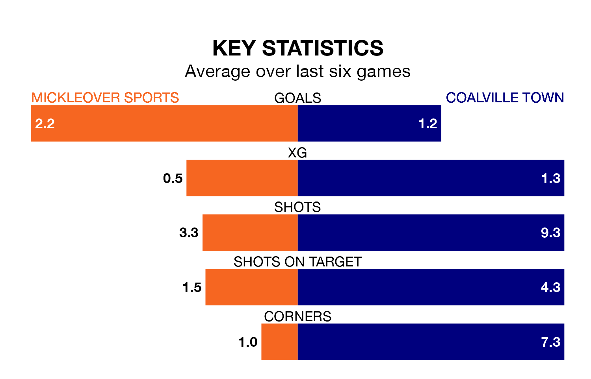

Mickleover Sports host Coalville Town at the Don Amott Leisure Group Arena on Monday on the back of five consecutive wins in the Southern League Premier Central.
Mickleover Sports have picked up 15 points from their last six games, and they face a Coalville side who also won their last match, and have collected nine points from the last possible 18.
With 71 goals in 35 games so far this season, Mickleover Sports are the league's second-highest scorers with 2.0 goals per game. And they are conceding fewer than average, letting in 38 goals at a rate of 1.1 per game.
Coalville are also above average scorers, with 1.9 goals per game, compared to a league average of 1.5. They have conceded 1.5 goals per game.
The hosts are second in the table after 35 games, of which they have won 23 and drawn five, earning 74 points.
Town are nine places behind Mickleover Sports in 11th, with 13 wins and nine draws putting them on 48 points.
In the last 10 years, Mickleover Sports and Coalville have played each other on six occasions. Coalville won five of them and they drew once.
On average, Mickleover Sports scored 1.3 goals and Coalville 2.8 in those matches.
Their last meeting was on November 22 2022, when Coalville won 4-1 at home.
Mickleover Sports' last match was on Saturday, a 2-1 win against Alvechurch.
Coalville beat Bromsgrove Sporting 1-0 last time out, also on Saturday.
Updated: 10:31 (UTC), 31/03/24